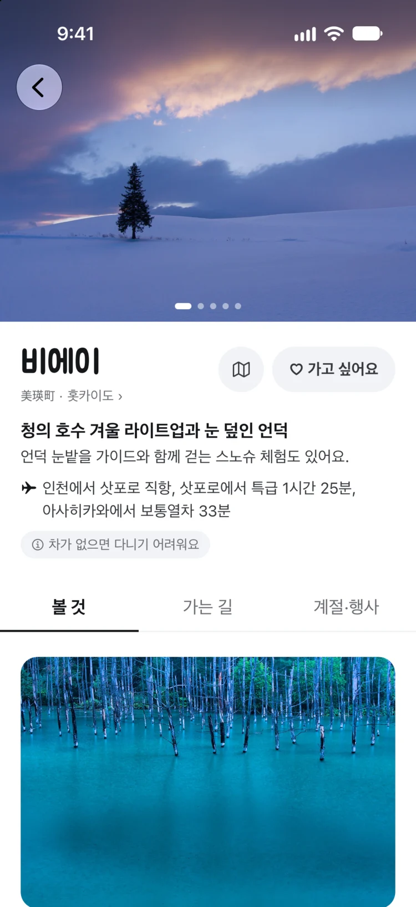
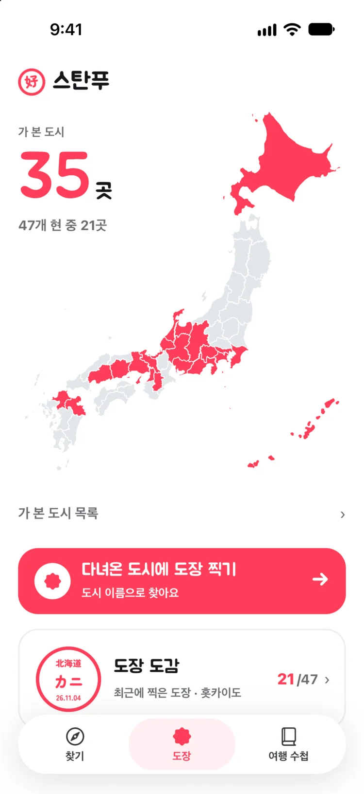

마쓰야마
공항에서 15분1894년에 지은 목조 공중탕 도고 온천 본관에 들어가요.
가는 길공항버스로 마쓰야마역까지 15분, 도고 온천까지 40분
직항인천, 김해, 청주에서 마쓰야마공항으로
 스탄푸
스탄푸
이번 겨울 직항이 있는 일본 지방 공항과 그 근처 소도시를 출발 공항별로 모았어요.
2026년 11월 1일에 확인한 겨울 시간표(10월 25일~3월 27일) 기준이에요. 출발 전 항공사에서 다시 확인해 주세요.
인천, 김해, 청주 중 두 곳 이상에서 직항으로 가고, 이번 겨울에 가기 좋은 곳이에요.
1894년에 지은 목조 공중탕 도고 온천 본관에 들어가요.
가는 길공항버스로 마쓰야마역까지 15분, 도고 온천까지 40분
직항인천, 김해, 청주에서 마쓰야마공항으로
사쿠라지마 화산은 시내에서 배로 15분이에요. 지금도 연기가 나고, 분화 경계 레벨 3이라 산에는 못 올라가요.
가는 길공항버스 40분
직항인천, 김해에서 가고시마공항으로
셀프 우동집이 아침부터 열고 한 그릇에 몇백 엔이에요.
가는 길공항버스 45분
직항인천, 김해에서 다카마쓰공항으로
추천 소도시 56곳은 앱에서 볼 수 있어요.
도시마다 갈 이유와 가는 길이 있어요. 마음에 든 곳은 ‘가고 싶어요’로 모아 둬요.

후쿠오카, 오사카, 도쿄, 삿포로 가세요? 근교 43곳과 가는 길이 있어요.

다녀온 도시에 도장을 찍으면 가 본 현이 지도에 칠해져요. 시·정·촌 1,719곳에 찍을 수 있어요.

지금은 iPhone에서만 받을 수 있어요. Android 앱은 준비 중이에요. 둘러보기는 로그인 없이 할 수 있고, 광고는 없어요.